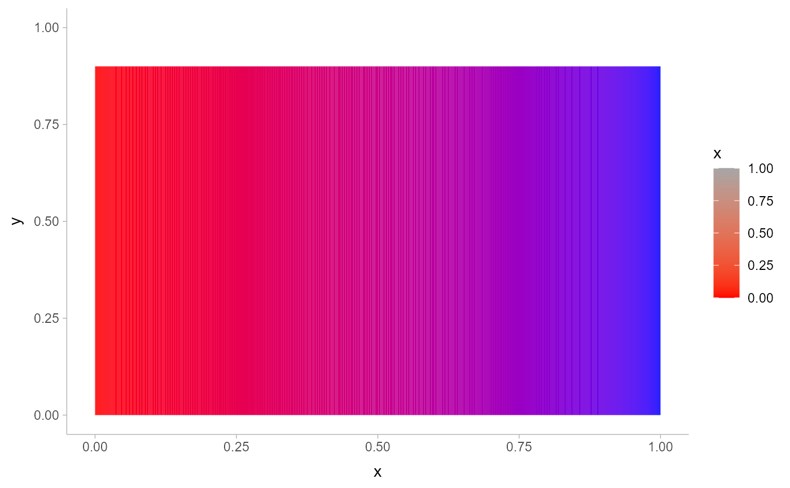
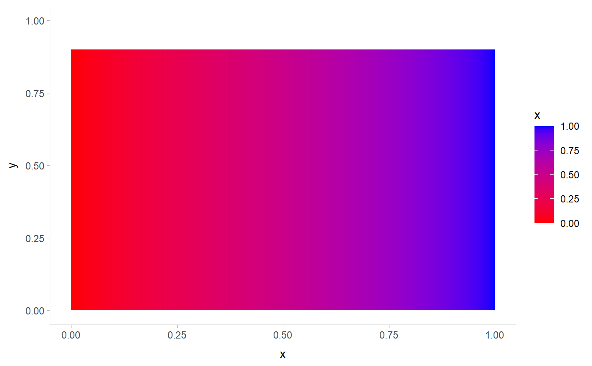
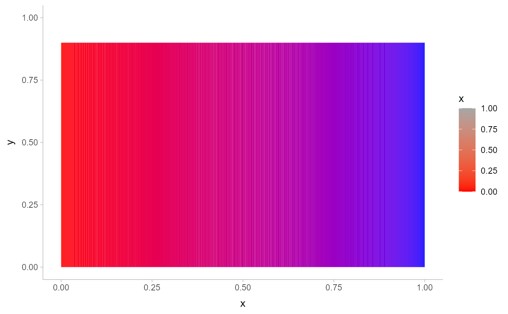
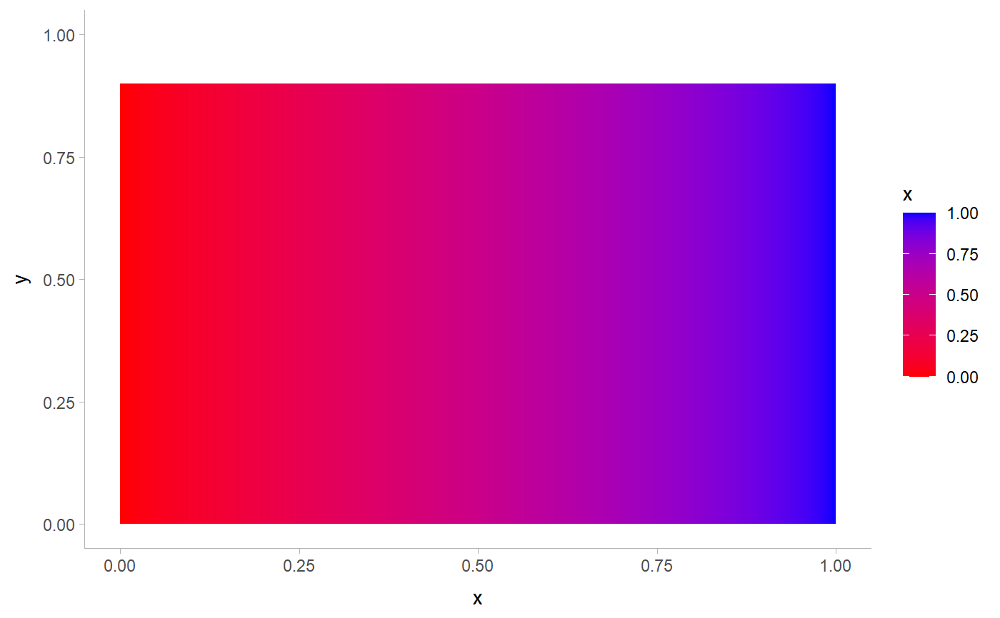

A colour ramp bar guide that shows continuous colour ramp scales mapped onto
values as a smooth gradient. Designed for use with scale_fill_ramp_continuous()
and scale_colour_ramp_continuous(). Based on guide_colourbar().
Usage
guide_rampbar(
...,
to = "gray65",
available_aes = c("fill_ramp", "colour_ramp")
)Arguments
- ...
Arguments passed on to
ggplot2::guide_colourbartitleA character string or expression indicating a title of guide. If
NULL, the title is not shown. By default (waiver()), the name of the scale object or the name specified inlabs()is used for the title.themeA
themeobject to style the guide individually or differently from the plot's theme settings. Thethemeargument in the guide overrides, and is combined with, the plot's theme.nbinA numeric specifying the number of bins for drawing the colourbar. A smoother colourbar results from a larger value.
displayA string indicating a method to display the colourbar. Can be one of the following:
"raster"to display as a bitmap image."rectangles"to display as a series of rectangles."gradient"to display as a linear gradient.
Note that not all devices are able to render rasters and gradients.
raster![[Deprecated]](figures/lifecycle-deprecated.svg) A logical. If
A logical. If TRUEthen the colourbar is rendered as a raster object. IfFALSEthen the colourbar is rendered as a set of rectangles. Note that not all graphics devices are capable of rendering raster image.alphaA numeric between 0 and 1 setting the colour transparency of the bar. Use
NAto preserve the alpha encoded in the colour itself (default).draw.ulimA logical specifying if the upper limit tick marks should be visible.
draw.llimA logical specifying if the lower limit tick marks should be visible.
positionA character string indicating where the legend should be placed relative to the plot panels.
directionA character string indicating the direction of the guide. One of "horizontal" or "vertical."
reverselogical. If
TRUEthe colourbar is reversed. By default, the highest value is on the top and the lowest value is on the bottomorderpositive integer less than 99 that specifies the order of this guide among multiple guides. This controls the order in which multiple guides are displayed, not the contents of the guide itself. If 0 (default), the order is determined by a secret algorithm.
- to
<string> The color to ramp to in the guide. Corresponds to
1on the scale.- available_aes
<character> Vector listing the aesthetics for which a
guide_rampbar()can be drawn.
Details
This guide creates smooth gradient color bars for use with scale_fill_ramp_continuous()
and scale_colour_ramp_continuous(). The color to ramp from is determined by the from
argument of the scale_* function, and the color to ramp to is determined by the to argument
to guide_rampbar().
Guides can be specified in each scale_* function or in guides().
guide = "rampbar" in scale_* is syntactic sugar for guide = guide_rampbar();
e.g. scale_colour_ramp_continuous(guide = "rampbar"). For how to specify
the guide for each scale in more detail, see guides().
See also
Other colour ramp functions:
partial_colour_ramp(),
ramp_colours(),
scale_colour_ramp
Examples
library(dplyr)
library(ggplot2)
library(distributional)
# The default guide for ramp scales is guide_legend(), which creates a
# discrete style scale:
tibble(d = dist_uniform(0, 1)) %>%
ggplot(aes(y = 0, xdist = d)) +
stat_slab(aes(fill_ramp = after_stat(x)), fill = "blue") +
scale_fill_ramp_continuous(from = "red")
 # We can use guide_rampbar() to instead create a continuous guide, but
# it does not know what color to ramp to (defaults to "gray65"):
tibble(d = dist_uniform(0, 1)) %>%
ggplot(aes(y = 0, xdist = d)) +
stat_slab(aes(fill_ramp = after_stat(x)), fill = "blue") +
scale_fill_ramp_continuous(from = "red", guide = guide_rampbar())

# We can tell the guide what color to ramp to using the `to` argument:
tibble(d = dist_uniform(0, 1)) %>%
ggplot(aes(y = 0, xdist = d)) +
stat_slab(aes(fill_ramp = after_stat(x)), fill = "blue") +
scale_fill_ramp_continuous(from = "red", guide = guide_rampbar(to = "blue"))

# We can use guide_rampbar() to instead create a continuous guide, but
# it does not know what color to ramp to (defaults to "gray65"):
tibble(d = dist_uniform(0, 1)) %>%
ggplot(aes(y = 0, xdist = d)) +
stat_slab(aes(fill_ramp = after_stat(x)), fill = "blue") +
scale_fill_ramp_continuous(from = "red", guide = guide_rampbar())

# We can tell the guide what color to ramp to using the `to` argument:
tibble(d = dist_uniform(0, 1)) %>%
ggplot(aes(y = 0, xdist = d)) +
stat_slab(aes(fill_ramp = after_stat(x)), fill = "blue") +
scale_fill_ramp_continuous(from = "red", guide = guide_rampbar(to = "blue"))
